Install the verified release
Download the wheel, installer, locked dependencies and checksums from the same release. Python 3.11–3.13 is supported.
Get the release ↗META-AGENTIC α–AGI · OPEN RESEARCH
A laboratory for the next frontier of intelligence. Discover opportunities. Orchestrate useful work. Follow the value through the entire loop.
No account. No API key. Start with a world worth improving.
Identify · Give the mission a goal and bounded, explicit inputs.
NEW / THE COMPOUNDING LAB · v1.23.0
Learn once. Freeze the capability. Test a different future. Inspect real predictions, expose failure, count the costs, and take the complete evidence with you.
Begin the experiment ↗NOVA-SEEDS / PROOF BLOOM
Five guided experiences. One complete path from unsupported claim to executable jobs, reviewed evidence and the next invention.
Enter the Proof Bloom ↗THE WHITE PAPER, MADE EXPLORABLE
Take a real computational journey through the original vision. Each decision changes the plan. Every result can be inspected.
01 / ENERGY & RESILIENCE
Seven opportunities. One pilot budget. Find a portfolio that makes the most of both.
Launch the mission ↗02 / SCIENCE & DISCOVERY
Turn a crowded research backlog into a coordinated, reproducible experiment plan.
Launch the mission ↗03 / OPERATIONS & VALUE
Choose useful automation pilots. Make cost, risk and review effort visible.
Launch the mission ↗Editable scenario data · actual portfolio and scheduling algorithms · real encryption · clearly labeled economic simulations
Methods & evidence ↗NEW / THE INSIGHT ATLAS
Explore the $15 quadrillion illustrative envelope. Inspect each sector, challenge the assumptions and give the next opportunity a testable shape.
Explore the opportunity ↗Compare agent firms. Expose the bottlenecks. Search 18 architectures, then evaluate the result on a separate holdout.
Build an agent firm ↗03 / ALPHA UNDER TRIALFollow the sources, export a validation brief and promote only replayed model results into a recoverable Chronicle.
Inspect the evidence ↗Three connected experiences · editable inputs · exact calculations · replayable evidence · no account or API key
THE GOVERNANCE OBSERVATORY
Move the assumptions. Watch strategies compete. Test the risk budget and the eight-day governance gate.
Enter the observatory ↗01 / MAKE SOMETHING USEFUL
Try the example. Replace it with your own inputs.
Every
result comes with its method and limits.
Ready. The example uses sample planning units; edit them for your problem.
RESULT / READY FOR YOUR REVIEW
Browser reports contain a SHA-256 integrity digest and your review, not a trusted agent signature. Use your local agent for signed identity, durable journals and verified $AGIALPHA receipts.
Only missions you explicitly save stay in this browser. Reload saved inputs to improve a decision. Export important work before clearing browser data.
02 / EXPLORE LOCAL INTELLIGENCE
Try actual GPT-2 text generation in this browser. The model downloads only when you ask, then generates locally. It is a text-completion research baseline; it can be wrong and is not a reasoning assistant.
Open the full Insight simulation studio ↗First use downloads about 128 MB of model weights plus the runtime. Prompts stay on this device.
Your model output will appear here.
03 / FOLLOW YOUR CURIOSITY
Eleven practical workspaces. Bring your constraints, calculate the trade-offs, and export a plan you can use.
No matching demos. Clear the search to see all entries.
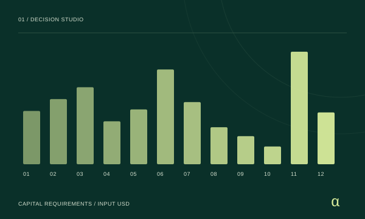
01 / Build a business
Which investments fit a $1.2M budget and 500 staff days?
Investment slate · cash-flow model · downside sensitivityOpen workspace ↗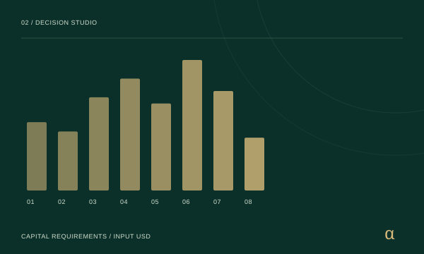
02 / Build a business
Which inventions justify the cost of developing and operating them?
Development portfolio · prerequisite map · verification jobsOpen workspace ↗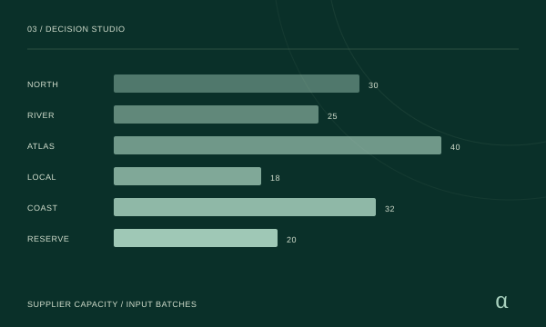
03 / Run operations
How should 60 batches be sourced when no supplier may exceed 45%?
Order allocation · landed costs · supplier-outage stress testOpen workspace ↗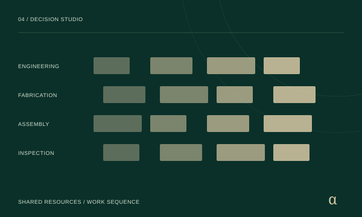
04 / Run operations
Can seven customer orders share four resources and meet the delivery window?
Resource-by-hour schedule · lateness report · priority orderOpen workspace ↗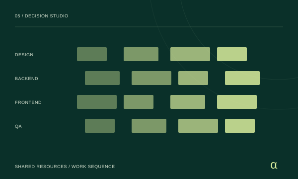
05 / Run operations
What delivery order fits a shared design, engineering and QA team?
Launch sequence · resource calendar · bottleneck analysisOpen workspace ↗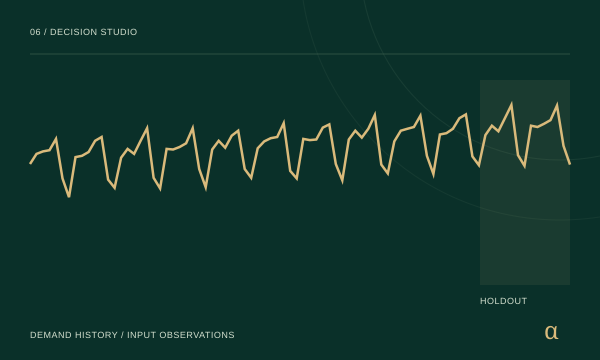
06 / Run operations
How much stock should be ordered for a two-week supplier lead time?
Holdout evaluation · replenishment quantity · demand stress testOpen workspace ↗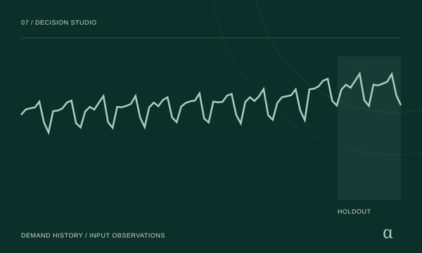
07 / Run operations
Which shifts need extra staff, what will they cost, and can the backlog be cleared?
Shift-by-shift staffing · coverage caps · backlog flow · incremental costOpen workspace ↗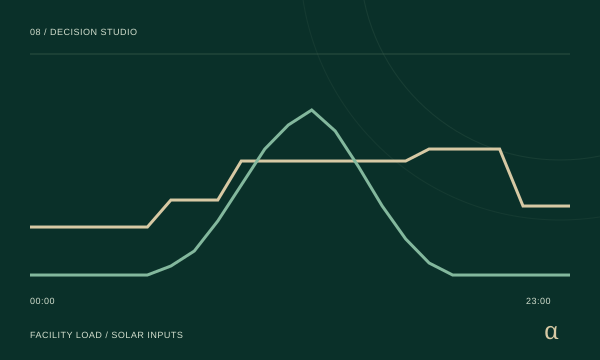
08 / Run operations
When should a battery charge while serving a facility across peak tariffs?
24-hour dispatch · energy balance · tariff cost comparisonOpen workspace ↗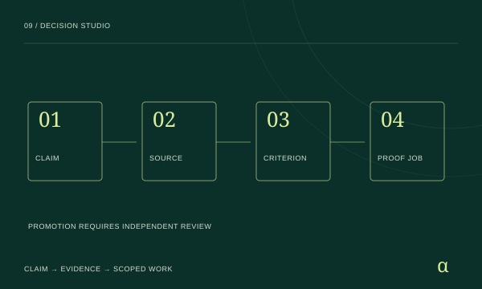
09 / Prove a claim
Which claims survive the evidence, and what exactly must be proved next?
Evidence docket · assigned proof backlog · acceptance criteriaOpen workspace ↗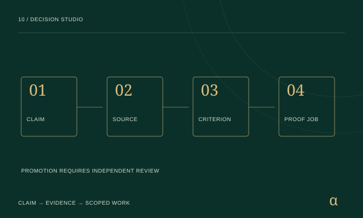
10 / Prove a claim
Is a promising capability ready for an independently reviewed pilot?
Promotion hold reasons · proof jobs · attributable evidence docketOpen workspace ↗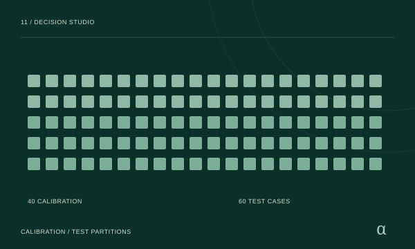
11 / Prove a claim
Does redesigning the review pipeline improve outcomes after all stated costs?
Frozen selection · confusion matrices · costed held-out comparisonOpen workspace ↗THE ORIGINAL IDEAS, PUT TO WORK
Each original demo opens its practical workspace. The research implementation and guide remain linked inside. Choose a demo and run it locally.
Invention to operating value: Which inventions justify the cost of developing and operating them? Development portfolio · prerequisite map · verification jobs
Open practical workspace ↗Invention to operating value: Which inventions justify the cost of developing and operating them? Development portfolio · prerequisite map · verification jobs
Open practical workspace ↗
Reproducible planning: Select a constrained enterprise portfolio, stress the downside and export reviewable Ascension jobs.
Open practical workspace ↗Ω-Lattice capital committee: Which investments fit a $1.2M budget and 500 staff days? Investment slate · cash-flow model · downside sensitivity
Open practical workspace ↗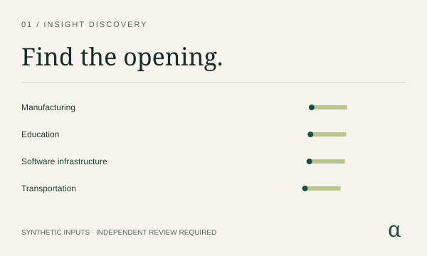
Local evidence review: Screen cross-sector hypotheses, allocate review time and export input-bound verification jobs and plaintext Nova-Seed drafts.
Open practical workspace ↗Demand & replenishment desk: How much stock should be ordered for a two-week supplier lead time? Holdout evaluation · replenishment quantity · demand stress test
Open practical workspace ↗Supplier resilience desk: How should 60 batches be sourced when no supplier may exceed 45%? Order allocation · landed costs · supplier-outage stress test
Open practical workspace ↗Factory delivery control: Can seven customer orders share four resources and meet the delivery window? Resource-by-hour schedule · lateness report · priority order
Open practical workspace ↗Factory delivery control: Can seven customer orders share four resources and meet the delivery window? Resource-by-hour schedule · lateness report · priority order
Open practical workspace ↗Ω-Lattice capital committee: Which investments fit a $1.2M budget and 500 staff days? Investment slate · cash-flow model · downside sensitivity
Open practical workspace ↗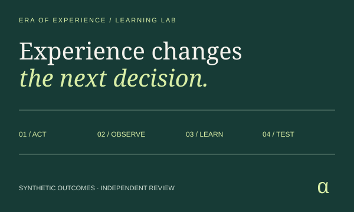
Offline learning lab: Learns a bounded policy from synthetic outcomes, tests it against a frozen baseline, and exports reviewable evidence.
Open practical workspace ↗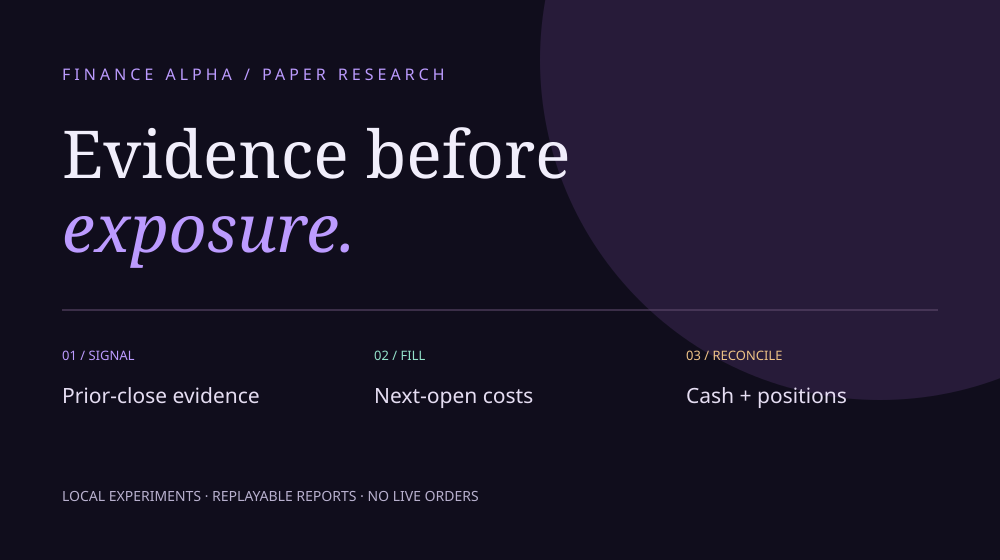
Reproducible paper research: Inspect next-open fills, cash, costs and risk decisions; compare strategies and replay every reported result.
Open practical workspace ↗Proof Debt → AGI Jobs: Which claims survive the evidence, and what exactly must be proved next? Evidence docket · assigned proof backlog · acceptance criteria
Open practical workspace ↗Demand & replenishment desk: How much stock should be ordered for a two-week supplier lead time? Holdout evaluation · replenishment quantity · demand stress test
Open practical workspace ↗Second-order agency trial: Does redesigning the review pipeline improve outcomes after all stated costs? Frozen selection · confusion matrices · costed held-out comparison
Open practical workspace ↗Second-order agency trial: Does redesigning the review pipeline improve outcomes after all stated costs? Frozen selection · confusion matrices · costed held-out comparison
Open practical workspace ↗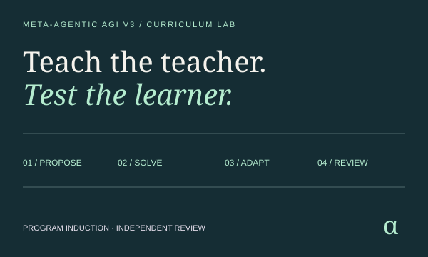
Reproducible program induction: Generate tasks, evolve bounded solver configurations and review a frozen candidate on separate tasks.
Open practical workspace ↗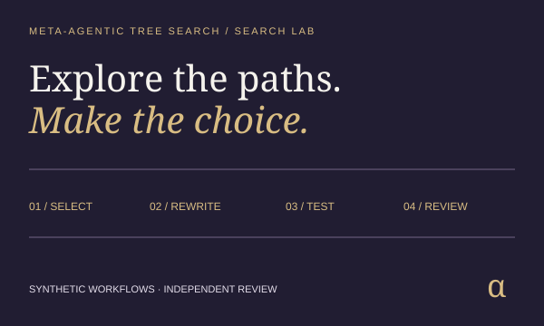
Offline search lab: Explore competing workflow rewrites, resource schedules, held-out review gates and an exhaustive benchmark.
Open practical workspace ↗Supplier resilience desk: How should 60 batches be sourced when no supplier may exceed 45%? Order allocation · landed costs · supplier-outage stress test
Open practical workspace ↗Product launch room: What delivery order fits a shared design, engineering and QA team? Launch sequence · resource calendar · bottleneck analysis
Open practical workspace ↗Microgrid dispatch console: When should a battery charge while serving a facility across peak tariffs? 24-hour dispatch · energy balance · tariff cost comparison
Open practical workspace ↗Nova-Seeds pilot gate: Is a promising capability ready for an independently reviewed pilot? Promotion hold reasons · proof jobs · attributable evidence docket
Open practical workspace ↗Product launch room: What delivery order fits a shared design, engineering and QA team? Launch sequence · resource calendar · bottleneck analysis
Open practical workspace ↗Proof Debt → AGI Jobs: Which claims survive the evidence, and what exactly must be proved next? Evidence docket · assigned proof backlog · acceptance criteria
Open practical workspace ↗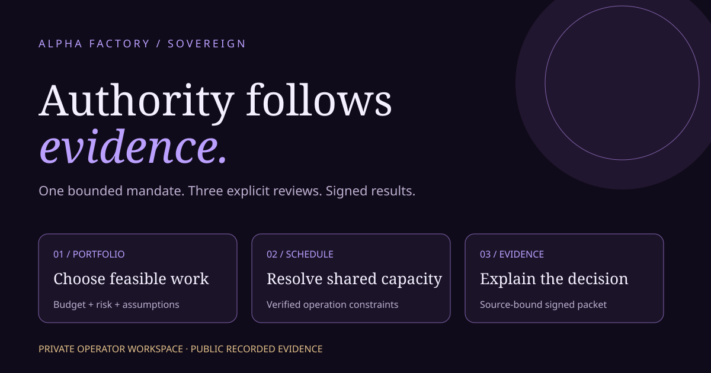
Signed, review-gated workflow: Choose a feasible portfolio, schedule approved work, and produce an attributable evidence brief.
Open practical workspace ↗Proof Debt → AGI Jobs: Which claims survive the evidence, and what exactly must be proved next? Evidence docket · assigned proof backlog · acceptance criteria
Open practical workspace ↗04 / TAKE THE NEXT STEP
Keep browser exploration light.
Move reviewed work
to a persistent, controlled runtime.
Download the wheel, installer, locked dependencies and checksums from the same release. Python 3.11–3.13 is supported.
Get the release ↗Import your downloaded mission in the console. Execute it, inspect evidence and approve a signed result. Configure models, isolated coding and wallet identity deliberately.
$AGIALPHA receipts connect approved work to recorded value. The agent checks payments and records reinvestment earmarks. Spending stays under your control.
Identity & payment setup ↗Check an exported agent result here, without uploading it. Obtain the agent’s public key through a trusted channel; copying a key from an unknown file does not establish identity.
Supports v1.4.0 exports. Verification does not establish the truth of sources or mainnet settlement.
THE ORIGINAL VISION, KEPT IN VIEW
Identify → Learn → Think → Design → Strategise → Execute. The flywheel connects evidence, useful work, human review and memory. The original diagrams, research, examples and historical implementations remain available.
This release provides bounded tools toward that vision. AGI, autonomous profit and open-ended self-improvement remain aspirations, not demonstrated capabilities.
Read the original vision & flywheels ↗CANONICAL $AGIALPHA · ETHEREUM · 18 DECIMALS
0xa61a3b3a130a9c20768eebf97e21515a6046a1fa
This is the $AGIALPHA project, separate from AGI Jobs.